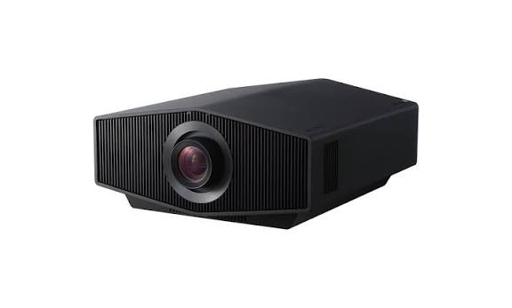

High-tech
Vidéoprojecteur 4K
Trois mille lumens ISO, Dolby Vision, applications de streaming intégrées. Le salon devient un cinéma.
Voir la fiche
High-tech
Casque circum-aural fermé, coussinets épais, câble torsadé. Le modèle de référence du studio, aussi bien à la maison qu'au bureau.
Ce casque est fermé, et c'est son premier mérite. Une écouteuse fermée isole par la matière : lecoussinets contacts épousent l'oreille et le son ne se répand plus. C'est ce qui permet d'écouter à volume normal dans une pièce partagée, sans obliger les autres à monter le leur.
Les coussinets épais sont le second point. Un coussinet fin ou mal garni appuie sur le cartilage et devient pénible au bout d'une heure. Un coussinet en mousse à mémoire de forme prend la forme de l'oreille, répartit la pression, et reste confortable sur une longue session d'écoute ou de travail.
Le câble torsadé n'est pas un détail esthétique. Il se déforme en spirale pour absorber les tirages, et il s'enroule facilement sur lui-même pour le rangement. Un câble plat et rigide s'emmêle, s'abîme aux coudes, et prend mal au fond d'un sac.
Le bandeau réglable complète l'ensemble. Une tête de taille différente change tout : l'axe des écouteurs ne tombe pas sur l'oreille, et la pression se répartit sur le dessus du crâne plutôt que sur les temporaux. C'est ce qui sépare un casque porté toute la journée d'un casque porté deux heures.
Un salon transformé en cinéma, ou un casque qui voyage bien. Le high-tech qui sert vraiment.
Il fait partie des 2 pièces retenues dans l'univers « High-tech », et il se distingue par des caractéristiques vérifiables plutôt que par des promesses.
Dans le même esprit

Trois mille lumens ISO, Dolby Vision, applications de streaming intégrées. Le salon devient un cinéma.
Voir la fiche
Un écrin, un champagne, des chocolats : le cadeau se donne tel quel, sans songer à l'emballer.
Découvrir
L'objet que l'on garde. Des montres qui se portent au quotidien plutôt que de prendre la poussière dans leur écrin.
Découvrir
Cuir pleine fleur tanné végétal : une pièce qui se patine au fil des années au lieu de s'user.
Découvrir